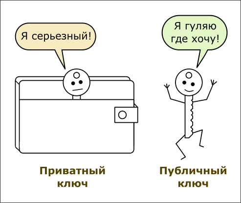
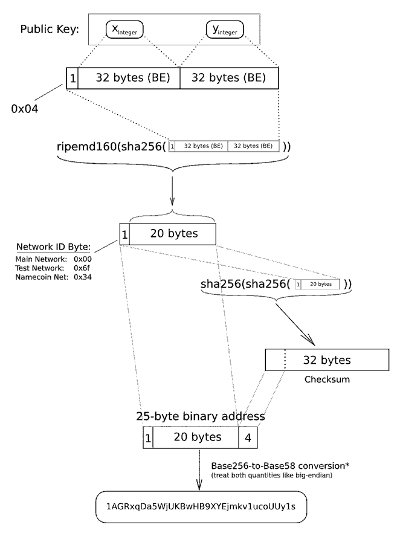

Здесь я собираю наиболее точные и полные описания терминов, используемых в криптовалютной среде. Надо понимать, что криптовалюты - относительно новая сфера ИТ, и в ней присутсвуют как профессионалы, так нахватавшиеся по верхам "криптоанархисты". И вот вторые, зачастую, слабо представляют себе что стоит за тем или иным термином, и безапелляционно пишут в Интернете всякий бред. Поэтому понять о чем идет речь на профильных ресурсах порой невозможно из-за расплывчатого и некорректного применения терминов.
Будем устранять этот недостаток.
...Статья в разработке...
Ассиметричная криптография (Asymmetric cryptography)
Ассиметричная криптография - это система шифрования, основанная на идее односторонних функций, то есть таких функций, у которых по известному x довольно просто найти значение f(x), тогда как обратное определение x из f(x) невозможно за разумный срок.
В ассиметричной криптографии выделяют три основных действия:
1. Генерирование пары "открытый/закрытый ключ". По сути, это создание открытого и закрытого набора байт с помощью специального алгоритма. Открытый ключ свободно передается во "внешнюю" среду, а закрытый остается в секрете у пользователя.
2. Подписание сообщения и проверка электронной подписи. Сообщение подписывается закрытым ключем. А достоверность подписи проверяется с помощью открытого ключа.
3. Шифрование и расшифровка сообщения. Сообщение шифруется с помощью открытого ключа (как ни странно!). И расшифровать его можно только с помощью закрытого ключа. Вот такое свойство ассиметричной криптографии. Другими словами: даже тот, кто зашифровал сообщение с помощью открытого ключа, не может его расшифровать, пока не достанет из загажника закрытый ключ. Правда, ему это и не нужно, так как он и так знает, что он шифровал.
Приватный (или закрытый) ключ (Private key)
Набор байт, полученный при процедуре генерации пары "открытый/закрытый ключ". Должен храниться в секрете у пользователя. Используется для выполнения расходных операций для соответствующего биткоин-адреса.

С математической точки зрения, закрытый ключ - это очень большое случайное число. Или набор случайных байт, кому как нравится.
Длина закрытого ключа: 2^256 = 256 бит = 32 байт.
Пример закрытого ключа в формате WIF - Wallet Import Format:
5J4XJRyLVgzbXEgh8VNi4qovLzxRftzMd8a18KkdXv4EqAwX3tS
Формат WIF - это просто кодирование байтов ключа в кодировку Base58 + контрольная сумма.
Публичный (или открытый) ключ (Publuc key)
Открытый ключ формируется из закрытого ключа с помощью преобразования на эллиптических кривых. Байты закрытого ключа используются для определения координаты стартовой точки преобразования. Само преобразование дает координаты итоговой точки на эллиптической кривой.
Длина публичного ключа 65 байт. Состав публичного ключа следующий:
Так как публичный ключ может быть однозначно вычислен из приватного ключа, программы Биткоин-кошельков зачастую хранят только приватный ключ.
Важно пронимать: приватный ключ может быть преобразован в открытый ключ, а открытый ключ не может быть преобразован обратно в приватный (за разумное время), так как математически возможно только одностороннее преобразование.
Так же как и закрытые ключи, открытые ключи зачастую представляются в формате WIF. Помимо классического WIF есть еще представление, называемое "сжатый WIF", и это представление хорошо подходит для открытых ключей (потому что они длиннее чем закрытые), и плохо подходит для закрытых ключей (в этом представлении "сжатый" закрытый ключ длинее на один байт чем "несжатый"!). Сжатые публичные ключи были введены для того, чтобы сэкономить несколько байт в каждой транзакции, тем самым существенно уменьшив скорость увеличения блокчейна.
Биткоин-адрес (Address)
.. или просто адрес - это строка, содержащая уникальное сочетание прописных и строчных латинских букв, а также цифр. Имеет длину до 34 символов. Большинство биткоин-адресов состоят из 34 или 33 символов, но могут содержать и менее 30 символов. Это объясняется наличием нулей в начале адреса: поскольку нули опускаются, то остаётся «короткий» адрес.
Важно! Во многих статьях по Биткоину пишут, что биткоин-адрес - это и есть публичный ключ. Но на деле это совсем не так.
С точки зрения математики, биткоин-адрес является хешем, полученным в результате последовательного применения алгоритма SHA256 и RIPEMD к байтам открытого ключа, дополненным однобайтовым префиксом и 4-х байтовой контрольной суммой. Длина биткоин-адреса составляет 25 байт.
Вот схема, поясняющаяя, как из открытого ключа генерируется биткоин-адрес:

Обычно байты адреса представляются в кодировке BASE58. Кодировка BASE58 - это, по сути то же самое что и BASE64, но только без символов "0, O, L, I, l, \, /", то есть без символов, которые можно визуально спутать друг с другом или с другими допустимыми символами. Примеры биткоин-адресов:
1BQ9qza7fn9snSCyJQB3ZcN46biBtkt4ee
1FcgaxayTtATwtT91348jbg7xoGwTZ8fDu
Так как биткоин-адрес однозначно вычисляется из публичного ключа, а публичный ключ однозначно вычисляется из закрытого ключа, то, по сути, для получения трех основных компонент Биткоина: закрытый ключ, открытый ключ, адрес, достаточно знать и хранить только закрытый ключ.
Важно понимать, что закрытый ключ, а следовательно и открытый ключ, и биткоин-адрес генерируются локально у пользователя и никак не проверяются. Считается, что эти данные всегда генерируются уникально. Например, совпадение адреса может произойти с вероятностью 2 - 320, что ничтожно мало.
Подробнее о биткоин-адресе можно прочитать здесь: http://bitcoinbook-builds.mkvd.net/translations/ru/chapter-4.html
Биткоин-адрес однозначно вычисляется из публичного ключа, а обратное преобразование - узнать публичный ключ из адреса - невозможно (разве что только методом перебора). Поэтому большинство транзакций в биткоин включает в себя не только адрес, но и публичный ключ, необходимый для проверки электронной подписи, которой подписана транзакция. Видимо, это нужно для того, чтобы узлы сети не тратили лишние такты для высчитывания адреса из публичного ключа.
Кошелек (wallet)
Значение 1. Программа или интернет-сервис для выполнения операций с криптовалютой. Программу, устанавливаемую локально на компьютере, еще называют "клиентом".
Значение 2. Файл, хранящий приватные ключи пользователя. В стандартном Bitcoin-клиенте он называется wallet.dat. Данный файл хранится в том же каталоге, где и выкачиваемый блокчейн. Важно делать периодическую резервную копию этого файла. Чтобы перенести кошелек на другой компьютер, достаточно перенести только этот файл.
Важно! Форматы файла wallet.dat у разных клиентов разные. У клиента Bitcoin Core - один формат, а у Electrum - совершенно другой, и между собой они не совместимы.
Аккаунт (Account)
Значение 1. Термин используется рамках локального клиента. В файле кошелька может хранится несколько биткоин-адресов. Похоже, что аккаунт - это человекочитаемое имя, локально назначаемое пользователем какому-нибудь своему биткоин-адресу. Служит просто для удобства выполнения операций с биткоин-адресами. (Но это неточно, надо разбираться дальше.)
Значение 2. Аккаунт на онлайн-сервисе для работы с криптовалютой. Например, аккаунт криптовалютного онлайн-кошелька.
Транзакция (Transaction)
Создаваемый на стороне клиента набор байт, в котором закодированы действия пользователя по распоряжению своими биткоинами. В транзакции указываются хеши предыдущих транзакций, на основе которых пользователь имеет сумму, которой он распоряжается в данной транзакции.
Байты транзакции подписываются приватным ключем пользователя, после чего транзакция отправляется на подтверждение в сеть Биткоин.
Майнеры проверяют контрольные суммы транзакций-входов для данной транзакции, проверяют контрольные суммы блоков, в которых размещены транзакции-входы, проверяют допустимость действия прописанного в транзакции, проверяют контрольную сумму самой транзакции, и на основе этой информации вынося "коллективное" решение, корректна ли данная транзакция или нет. Для принятия "коллективного" решения трензакцию обсчитывают разные майнеры, и в случае правильности всех сведений подписывают транзакцию от себя и помещают транзакцию в общий блокчейн.
Блок (Block)
Набор байт, содержащий информацию о нескольких транзакциях, размещаемый в блокчейне. Один блок содержит примерно 1500 транзакций.
Блокчейн (Blockchain)
... или цепочка блоков. Основа криптовалютной сети. Едина для всех пользователей сети, хранится у всех пользователей сети (за исключением самых свежих блоков). Каждая подтвержденная транзакция помещается в блокчейн. Самая первая транзакция, созданная при старте работы сети тоже находится в цепочке блоков. Все последующие транзакции подписываются не только на основе своего содержания, но и на основе транзакций, которые служили входами для данной транзакции. Таким образом, подписи транзакций зависят от текущей транзакции и предыдущих транзакций, что обеспечивает неизменяемость транзакций после помещения их в блокчейн. Измененный "задним числом" блок в системе невозможен, если конечно не будет осуществлена атака 51%.
Токен (Token)
Многозначный термин.
Значение 1. Вид криптовалюты - биткоин, лайткоин, эмеркоин и т. д.
Значение 2. Обозначение криптовалюты - BTC, LTC, EMC и т. д.
Значение 3. Некое криптографически подписанное обязательство, зарегистрированное в пределах блокчейна.
Значение 4. Аппаратный или программный кошелек для хранения криптовалютных ключей.
Значение 5. Криптовалюта на основе Etherium, выпущенная в рамках ICO какой-нибудь компанией.
Майнинг (Mining)
Майнинг - это процесс подтверждения и записи транзакций в блокчейн. Узлы сети используют блокчейн, чтобы отличить реальные транзакции от попыток потратить одни и те же средства дважды. Если говорить абстрактно, то основная цель майнинга — это достижение консенсуса между узлами сети относительно того, какие транзакции считать легитимными.
Кроме того, майнинг — это способ эмисии биткоинов, которые начисляются в качестве вознаграждения за решение майнером математической задачи по подтверждению и подписыванию транзакций. Важно понимать, что майнинг - это единственный способ эмиссии биткоинов. Процесс намеренно сделан ресурсоёмким и сложным, чтобы количество блоков, найденных майнерами каждый день, оставалось постоянным.
Каждый блок в блокчейне содержит подтверждение того, что работа по решению математической задачи была проведена.
Механизм обсчета блока следующий: дается хеш предыдущего блока и хеши новых транзакций, помещаемых в блок. Требуется найти такое случайное число, что если взять:
то в начале этого хеша должно получиться определенное количество нулей. Необходимое количество нулей так же называют "сложностью нахождения блока".
Каждый из узлов сети может легко и быстро проверить, действительно ли блок был закрыт по правилам. Он может взять те же данные: хеш предыдущего блока плюс хеши транзакций, включенных в блок плюс найденое майнером случайное число, записанное в блоке и посчитать от этих данных хеш. Хеш должен совпасть с хешем, записанным в блоке, и этот хеш должен содержать в начале то количество нулей, которое соответствующет сложности, существовавшей на тот момент в сети (видимо, сложность тоже записывается в блок, тут надо уточнять).
На самом деле, пример с нужным количеством нулей - весьма синтетический, и просто показывает как может работать proof of work в некой абстрактной криптовалюте. В Биткоин же, вместо того, чтобы требовать нули, в качестве доказательства правильности работы требуется, чтобы хэш заголовка блока транзакций был меньше или равным числу, известному как цель. Эта цель автоматически регулируется для того, чтобы обсчет подтвеждения нового блока Биткойн занимал в среднем около десяти минут.
Дописать:
Узел (Node)
Мультисигнатурный адрес
Повторная транзакция (double spend)
Трансляторы транзакций
Proof of work и другие способы достижения консенсуса